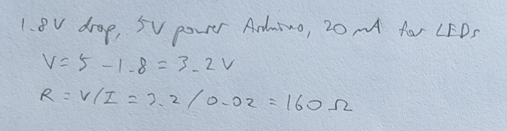
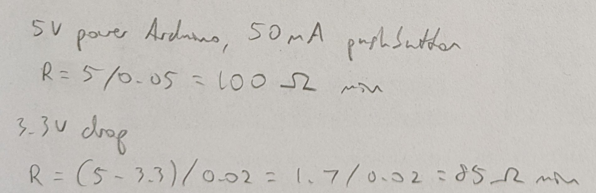
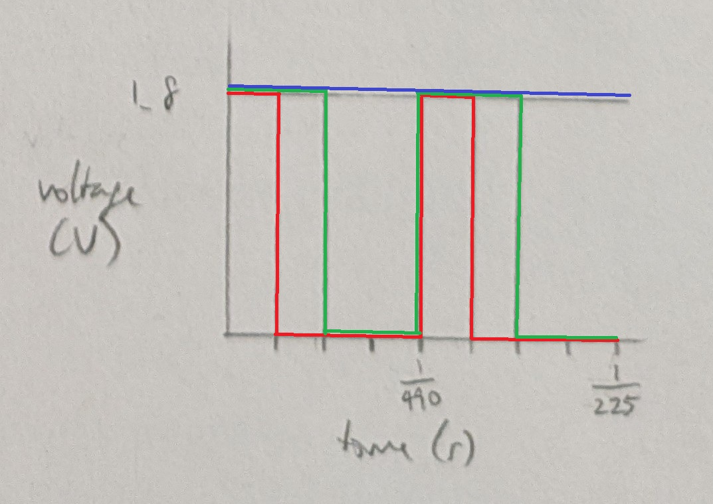

Requirements
- 3+ LEDs with current limited using resistors, at least one of which fades
- button, tilt switch, or custom switch with current limited
- for-loop
- digitalWrite()
- digitalRead()
- analogWrite()
Each diode and switch is wired to its own pin providing power.
The 3 diodes all connect to the same ground.
The calculation below yielded the minimum resistances needed.
Red and Green LEDs:
Pushbutton and Blue LED:
Pushbuttons were rated for 50mA on the datasheets (octopart).
220 Ohm resistors were used for all 4 resistors across 3 different situations.

Built with the templates of Digital/Debounce and Analog/Fading.
The button toggles to fade the RGB LED in or out. All 3 LEDs are assigned the same value.
/*
Fade3
Pushbutton toggles to fade 3 LEDs in or out.
Built with the templates of Digital/Debounce and Analog/Fading.
The LEDs are attached to pins 9, 10, and 11.
The pushbutton is connected to power through pin 4 and input through pin 2.
modified 13 Oct 2025
by Heidi Wang
*/
// the number of the pushbutton pin
const int buttonPin = 2;
// the number of the pin for LED 1
const int ledPinR = 9;
// the number of the pin for LED 2
const int ledPinG = 10;
// the number of the pin for LED 3
const int ledPinB = 11;
// the current state of the output pin
int ledState = HIGH;
// the current reading from the input pin
int buttonState;
// the previous reading from the input pin
int lastButtonState = LOW;
// the last time the output pin was toggled
unsigned long lastDebounceTime = 0;
// the debounce time; increase if the output flickers
unsigned long debounceDelay = 50;
// the setup function runs once when you press reset or power the board
void setup() {
// initialize the button pin as an input
pinMode(buttonPin, INPUT);
// initialize the pin for LED 1 as an output
pinMode(ledPinR, OUTPUT);
// initialize the pin for LED 2 as an output
pinMode(ledPinG, OUTPUT);
// initialize the pin for LED 3 as an output
pinMode(ledPinB, OUTPUT);
// initialize the pin for button power as an output
pinMode(4, OUTPUT);
// set voltage to HIGH to provide power to the button
digitalWrite(4, HIGH);
// set initial state for LED 1
digitalWrite(ledPinR, ledState);
// set initial state for LED 2
digitalWrite(ledPinG, ledState);
// set initial state for LED 3
digitalWrite(ledPinB, ledState);
}
// the loop function runs over and over again forever
void loop() {
// read the state of the switch into a local variable:
int reading = digitalRead(buttonPin);
// check to see if you just pressed the button
// (i.e. the input went from LOW to HIGH), and you've waited long enough
// since the last press to ignore any noise:
// If the switch changed, due to noise or pressing:
if (reading != lastButtonState) {
// reset the debouncing timer
lastDebounceTime = millis();
}
// check whether the reading has been there for longer than the debounce delay
if ((millis() - lastDebounceTime) > debounceDelay) {
// whatever the reading is at, it's been there for longer than the debounce
// delay, so take it as the actual current state:
// if the button state has changed:
if (reading != buttonState) {
// take the reading as the actual current state
buttonState = reading;
// only toggle the LED if the new button state is HIGH
if (buttonState == HIGH) {
// toggle the LED
ledState = !ledState;
// if the new LED state is HIGH, then fade the LED on
if (ledState == HIGH) {
// fade in from min to max in increments of 5 points:
for (int fadeValue = 0; fadeValue <= 255; fadeValue += 5) {
// sets the value for LED 1 (range from 0 to 255):
analogWrite(ledPinR, fadeValue);
// sets the value for LED 2 (range from 0 to 255):
analogWrite(ledPinG, fadeValue);
// sets the value for LED 3 (range from 0 to 255):
analogWrite(ledPinB, fadeValue);
// wait for 30 milliseconds to see the fading effect
delay(30);
}
}
// else the new LED state is LOW, then fade the LED off
else {
// fade out from max to min in increments of 5 points:
for (int fadeValue = 255; fadeValue >= 0; fadeValue -= 5) {
// sets the value for LED 1 (range from 0 to 255):
analogWrite(ledPinR, fadeValue);
// sets the value for LED 2 (range from 0 to 255):
analogWrite(ledPinG, fadeValue);
// sets the value for LED 3 (range from 0 to 255):
analogWrite(ledPinB, fadeValue);
// wait for 30 milliseconds to see the fading effect
delay(30);
}
}
}
}
}
// save the reading. Next time through the loop, it'll be the lastButtonState:
lastButtonState = reading;
}
The voltage is assumed to be across an LED with a 1.8V drop.
Voltage over time for analogWrite with 3 duty cycles
Red = 64, Green = 128, Blue = 255
With 3 LEDs that draw 20mA of current each, i.e. 60 total in parallel, a 1200mAh battery can power the circuit for 1200mAh / 60mA = 20 hours.
The voltage across my 3 LEDs when all were on was: R 1.96 G 2.67 B 2.66V. The theoretical voltage drop for R and G is 1.8V, while for B is 3.3V. The actual voltage across was greater for R and G and less for B.
No AI use.